1.2.7 控制面板底部（Control Board Footer）
对应原始手册：## 11. Control Board Footer
一、功能层级与界面总览
1.1 功能层级结构
飞行冻结] B[Resets
重置] C[Freezes
冻结] D[Sim Controls
模拟控制] E[Volume
音量] F[Reposition
重新定位] G[Weather Presets
天气预设] H[Capture Flight
捕获飞行] I[Print
打印] J[Speed Up
加速] K[Clear All Malf.
清除所有故障] L[Notifications
通知] M[Help
帮助] N[Workspace
工作区] end B --> B1[Environment
环境重置] B --> B2[ISA & Winds
ISA与风重置] B --> B3[Systems
系统重置] B --> B4[Total
全部重置] B --> B5[Session
课程重置] B --> B6[More…
更多重置] C --> C1[Total
总冻结] C --> C2[Position
位置冻结] C --> C3[Fuel
燃油冻结] C --> C4[More…
更多冻结] D --> D1[Visual
视觉] D --> D2[Motion
运动] D --> D3[Control Loading
操纵载荷] D --> D4[Prime Smoke
烟雾预注] D --> D5[Ceiling Lights
天花板灯] D --> D6[More…
更多模拟控制] M --> M1[Help Panel
帮助面板] M --> M2[Send Feedback
发送反馈] N --> N1[Maintenance
维护] N --> N2[Instr. Repeaters
仪表复示器] N --> N3[Lesson Profile
课程计划剖面] N --> N4[Map
地图] N --> N5[Control Board
控制面板] N --> N6[Advanced
高级] subgraph Popups["点击后弹出 / Pop-up Panels"] P1[RESETS Sliding Panel
重置滑动面板] P2[FREEZES Sliding Panel
冻结滑动面板] P3[SIMULATOR CONTROLS
模拟器控制滑动面板] P4[PRINT OPTIONS
打印选项滑动面板] end B6 -.->|点击弹出| P1 C4 -.->|点击弹出| P2 D6 -.->|点击弹出| P3 I -.->|点击更多| P4 style Main fill:#dbeafe,stroke:#2563eb,stroke-width:2px style Popups fill:#fef3c7,stroke:#d97706,stroke-dasharray: 5 5
1.2 界面结构
| 区域/控件 | 位置 | 功能说明 | 对应章节 |
|---|---|---|---|
| 第一功能组 Flight Freeze / Resets / Freezes / Sim Controls / Volume | 底部栏左侧 | 飞行冻结、重置、冻结、模拟控制、音量调节等核心控制功能 | 详见当前页面 2.1~2.5 小节 |
| 第二功能组 Reposition / Weather Presets / Capture Flight / Print / Speed Up | 底部栏中部 | 重新定位、天气预设、捕获飞行、打印、时间加速等辅助功能 | 详见当前页面 2.6~2.10 小节 |
| 第三功能组 Clear All Malf. / Notifications / Help / Workspace | 底部栏右侧 | 清除故障、通知查看、帮助、工作区切换等系统功能 | 详见当前页面 2.11~2.14 小节 |

图 1：控制面板底部总览（Control Board Footer）
二、核心功能详解
2.1 Flight Freeze（飞行冻结）
切换型按钮，允许教员激活/停用飞行冻结模式。激活后冻结所有飞行参数（俯仰、坡度、航向、空速、高度和位置）、运动系统（洗出效应除外），并降低声音水平。
| 属性 | 说明 |
|---|---|
| 功能定义 | 激活/停用飞行冻结模式 |
| 冻结范围 | 俯仰、坡度、航向、空速、高度、位置、运动系统（洗出除外）、声音水平降低 |
| 系统行为注意 | 冻结期间大多数模拟飞机系统不受影响，仍继续响应机组操作和故障插入（冻结的高度和位置参数影响除外） |
| 边界行为 | 重新定位期间按钮禁用，显示"Reposition in Progress"；温度/压力/风/云高渐变等参数修改在冻结解除后才生效；无论自动驾驶是否激活，且与解冻时的操纵位置无关，解冻时均不会导致剧烈控制或运动变化 |
| 与其他功能关系 | 与 Freezes 滑动面板中的 Flight Freeze 为同一功能的不同入口 |
2.2 Resets（重置）
重置按钮允许教员执行多种重置操作。点击后显示重置卷展菜单，然后点击所需重置项激活。
2.2.1 重置卷展菜单按钮
| 按钮 | 功能说明 | 边界行为 |
|---|---|---|
| Environment 环境重置 | 将环境重置为：干燥跑道、跑道上有橡胶、跑道粗糙度 2、能见度 40 海里、RVR 9900 英尺、无云、无雾、无雨、无冰雹、无降雪、无冬季场景、无沙尘、无闪电、无雷声、无风暴云、无结冰、时间加速因子重置 | 当以上所有条件均已满足时禁用；点击后按钮亮起 2 秒。注意：当上述任一条件不满足时，警告窗口中将显示"非标准环境"信息；关于 CAVOK 条件，当实际条件低于 CAVOK 定义标准时，将触发该信息 |
| ISA & Winds ISA与风重置 | 设置标准大气条件：海平面气压 1013.2 mb、中间高度 18,000 ft、上层高度 36,089 ft、温度递减率 -1.98°C/1000ft、海平面温度 15°C、中间温度 -21.0°C（在 18,000 ft 处）、上层温度 -56.5°C（在 36,089 ft 处）、机场风 360/0° 磁/kt、中间风 360/0° 磁/kt、上层风 360/0° 磁/kt、无阵风、基础湍流、无风切变、无微暴流 | 当上述所有条件均已满足时禁用；点击后按钮亮起 2 秒 |
| Systems 系统重置 | 重置"重置系统"分支下的所有可重置系统（具体数量和类型取决于 IOS 配置），并将温度重置为正常运行值 | 点击后按钮亮起 2 秒。例外：若存在活跃故障，或特定系统被有意排除，则温度不重置 |
| Total 全部重置 | 执行全部重置：坠机重置（若已坠机）开启、清除故障开启、清除失效站点开启、发动机超限开启、燃油使用指示器开启；自动执行系统重置 | 点击后按钮亮起 2 秒 |
| Session 课程重置 | 执行课程重置：结束课程、碰撞抑制、刹车温度重置抑制未激活、RAAS 抑制未激活（可选）、环境重置、标准大气与风、湍流启用按钮恢复默认设置、地面摩擦按钮恢复默认设置、结束讲评记录、无 TCAS 交通、无 GATES、无地面交通、时间设为白天、清除地图和航迹的轨迹、声音 100%、清除所有飞行情景捕获、清除所有快照（快照/设置选项）；自动执行全部重置（包括系统重置） | 点击后弹出"重置课程"确认菜单；点击确认后按钮亮起 2 秒 |
| More… 更多 | 显示 RESETS 滑动面板，提供 25 个独立系统重置按钮 | — |
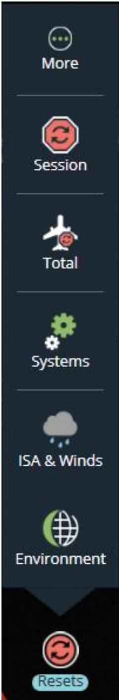
图 2：重置卷展菜单（Resets Roll up Menu）
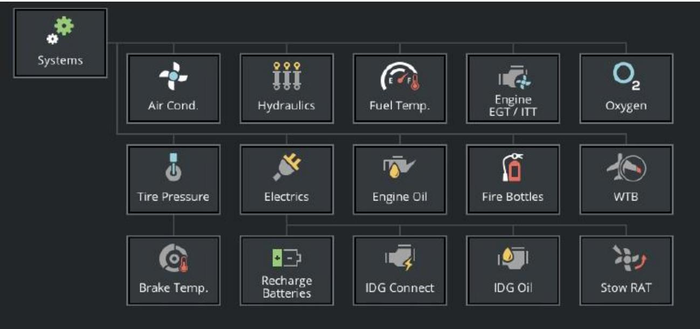
图 3：系统重置
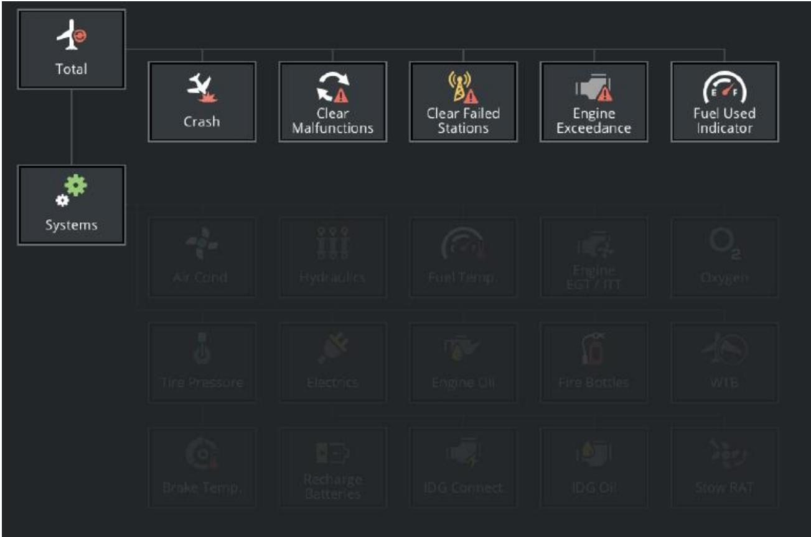
图 4：全部重置
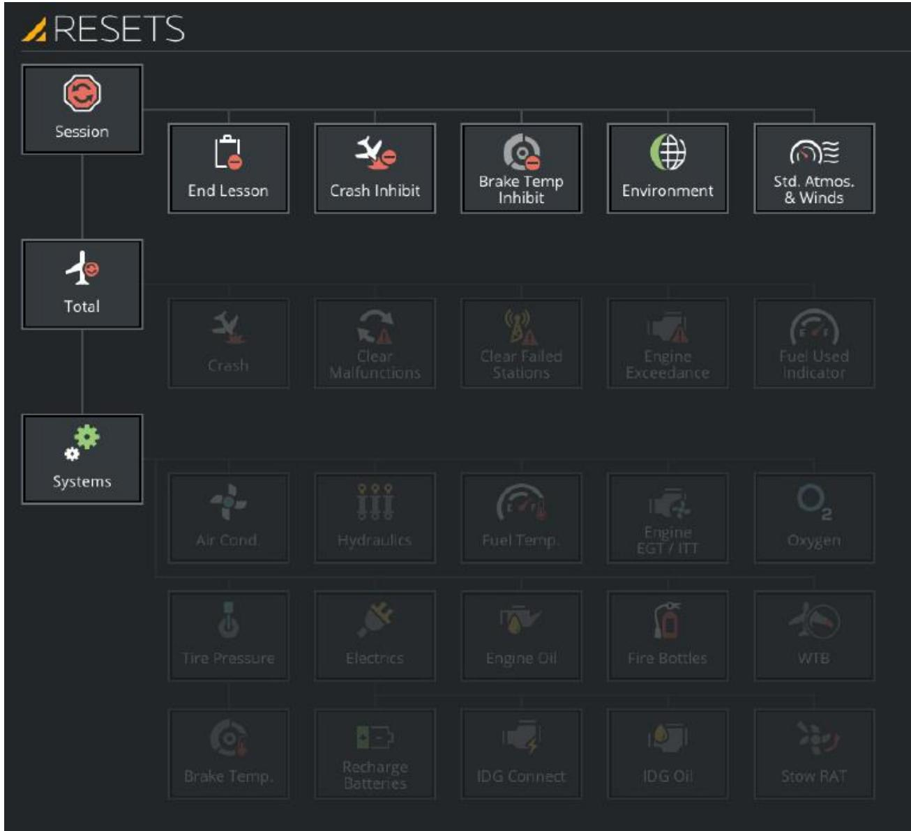
图 5：课程重置
2.2.2 RESETS 滑动面板
点击"更多…"按钮后显示 RESETS 滑动面板，允许教员执行 25 个独立系统的重置操作。每个按钮的通用行为：点击后亮起 2 秒；当目标系统已处于正常状态时该按钮禁用。
| 按钮 | 功能定义 | 禁用条件 |
|---|---|---|
| End Lesson | 结束当前正在进行的课程计划，显示主索引面板 | 无活跃课程计划时禁用 |
| Crash Inhibit碰撞抑制 | 防止超出碰撞限制时发生碰撞，模拟在碰撞情况下继续运行。 未选择此按钮时：发生碰撞则模拟冻结，但以下情况除外——咨询性碰撞或超限咨询（仅显示碰撞/咨询/超限面板，但模拟不会冻结）。 抑制范围：除着陆时下降率过大和地面侧向力过大外的所有碰撞检测；上述两项不可抑制（防止训练过程中可能造成人员受伤的过大运动冲击和剧烈碰撞）。 激活时效果：着陆时下降率过大的触发阈值会提高，以允许更硬的着陆，同时仍保持上述保护功能。 （检测参数清单共 21 项，详见下方折叠面板） | 飞机已坠毁时禁用 |
| Brake Temp Reset Inhibit 刹车温度重置抑制 | 抑制重新定位时重置刹车和轮胎温度 | — |
| Environment 环境 | 同 2.2.1 环境重置 | 同 2.2.1 |
| Standard Atmos & Winds 标准大气与风 | 同 2.2.1 ISA 与风重置 | 同 2.2.1 |
| Crash 碰撞 | 咨询性碰撞和超限咨询： • 碰撞重置按钮不显示 • 碰撞/咨询/超限页面在 30 秒后自动清除 常规碰撞： • 飞行冻结按钮保持暗色，直到执行碰撞重置或重新定位 • 碰撞重置清除碰撞/咨询/超限页面并执行起飞重新定位 特殊重置行为（速度过大 / 过载过大 / 马赫数过大 / 空中相撞）： • 清除坠毁/警告/超限面板 • 解除飞行冻结 • 坠毁重置后 30 秒内不监控坠毁状态 （常规碰撞类型共 21 项，详见下方折叠面板） | 飞机未坠毁时禁用；选择后按钮保持激活 2 秒 |
| Clear Malfunctions 清除故障 | 清除所有激活和预位的故障 | 无激活或预位故障时禁用 |
| Clear Failed Stations 清除失效站位 | 清除所有由教员设置的失效站位 | 无失效站位时禁用 |
| Engine Exceedance 发动机超限 | 清除发动机超限（N1、N2、EGT 红色框显示移至下一个 DEU 飞行航段），需空速超过 80 节并保持 2 秒 | 未发生发动机超限时禁用 |
| Fuel Used Indicator 燃油使用指示器 | 重置燃油使用指示器 | — |
| Air Conditioning 空调 | 将空调温度重置为正常 | 空调温度正常时禁用 |
| Hydraulics 液压 | 将液压油量和油温重置为正常运行值 | 液压油量和油温正常时禁用 |
| Fuel Temp. 燃油温度 | 将燃油温度重置为环境温度 | 燃油温度处于环境温度时禁用 |
| Engine EGT/ITT 发动机 EGT/ITT | 将发动机排气温度或级间涡轮温度重置为正常运行值 | EGT 或 ITT 处于稳定状态时禁用 |
| Oxygen 氧气 | 重新填充氧气瓶 | 氧气瓶已满时禁用 |
| Tire Pressure 轮胎压力 | 将轮胎压力重置为正常，刹车温度重置为环境温度 | 轮胎压力正常且刹车温度处于环境温度时禁用 |
| Brake Temp 刹车温度 | 将刹车温度重置为环境温度 | 刹车温度处于环境温度时禁用 |
| Electrics 电气 | 重置电池充电、IDG 连接、IDG 滑油、收起 RAT 至正常状态 | 所有项目均已正常时禁用 |
| Recharge Batteries 电池充电 | 为电池充电 | 所有电池均已充满时禁用 |
| IDG Connect IDG 连接 | 重置已断开的 IDG | IDG 已连接时禁用 |
| IDG Oil IDG 滑油 | 将 IDG 滑油量和温度重置为正常运行值 | IDG 滑油量和温度正常时禁用 |
| Stow RAT 收起 RAT | 收起冲压空气涡轮（RAT） | RAT 已收起时禁用 |
| Engine Oil 发动机滑油 | 将发动机滑油量和温度重置为正常运行值 | 发动机滑油量和温度正常时禁用 |
| Fire Bottles 灭火瓶 | 重新填充所有灭火瓶 | 灭火瓶已充满时禁用 |
| WTB 翼尖刹车 | 将翼尖刹车（WTB）重置为正常状态 | WTB 处于正常状态时禁用 |
📎 Crash Inhibit 检测参数清单（21 项）
以下参数用于检测飞机碰撞状态：
- 着陆时下降率过大
- 机翼触地（咨询）
- 尾撬触地（咨询）
- 着陆时起落架未放下并锁定（咨询）
- 地面侧向力过大
- 速度过大
- 过载过大
- 马赫数过大
- 跑道外接地（咨询）
- 空中相撞
- 地形/障碍物撞击
- 跑道外结构撞击
- 跑道外速度过大（>75 节）
- 空中飞行加速度过大（超限）
- 空中急动度（加速度变化率）过大（超限）
- 空中飞行加速度不稳定（超限）
- 地面飞行加速度过大（超限）
- 地面急动度（加速度变化率）过大（超限）
- 地面飞行加速度不稳定（超限）
- 推回时发动机推力过大
- 推回时发动机推力或刹车使用过大（选项）
📎 Crash 常规碰撞类型清单（21 项）
常规碰撞类型及重置行为如下（速度过大 / 过载过大 / 马赫数过大 / 空中相撞四类还会触发「清除面板 + 解除飞行冻结 + 30 秒不监控」）：
- 着陆时下降率过大
- 机翼触地（警告）
- 尾撬触地（警告）
- 起落架未放下并锁定着陆（警告）
- 地面侧向力过大
- 速度过大
- 过载过大
- 马赫数过大
- 跑道外接地（警告）
- 空中相撞
- 地形/障碍物撞击
- 跑道外结构撞击
- 跑道外速度过大（>75 节）
- 空中飞行加速度过大（超限）
- 空中加加速度（加速度变化率）过大（超限）
- 空中飞行加速度不稳定（超限）
- 地面飞行加速度过大（超限）
- 地面加加速度（加速度变化率）过大（超限）
- 地面飞行加速度不稳定（超限）
- 推回期间发动机推力过大
- 推回期间发动机推力或刹车使用过大（选项）
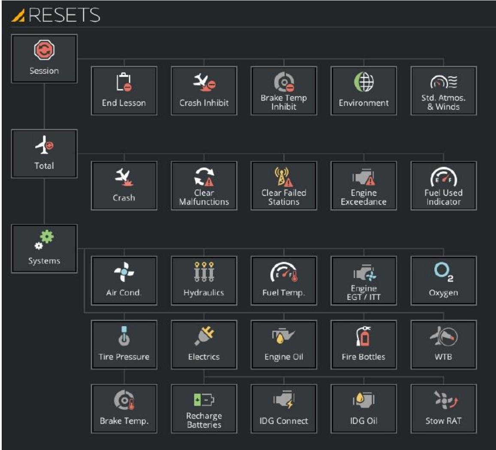
图 6：RESETS 滑动面板
2.3 Freezes（冻结）
冻结按钮允许教员执行总冻结、位置冻结和燃油冻结。点击后显示冻结卷展菜单，已激活的冻结项以红色显示。点击"更多…"显示 FREEZES 滑动面板。
2.3.1 冻结卷展菜单按钮
| 按钮 | 功能说明 | 边界行为 |
|---|---|---|
| Total 总冻结 | 冻结所有飞行参数（俯仰、坡度、航向、空速、高度、位置）、飞行控制、运动系统（洗出除外）、所有飞机系统；通信系统继续运行，声音降低 | 重新定位期间禁用；解冻不会导致剧烈控制或运动变化 |
| Position 位置冻结 | 冻结/解冻飞机在当前地理位置；冻结期间飞机正常飞行 | 重新定位期间禁用 |
| Fuel 燃油冻结 | 激活/停用燃油冻结；所有仪表正常指示，燃油量指示器保持不活动（不消耗燃油），加油仍可进行 | 重新定位期间禁用 |
| More… 更多 | 显示 FREEZES 滑动面板 | — |
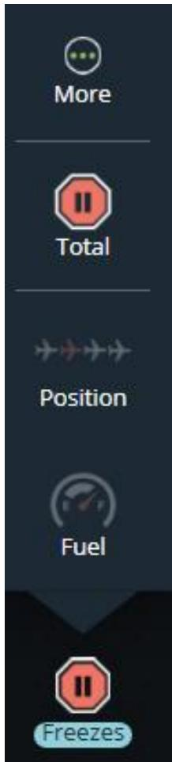
图 7：冻结卷展菜单（Freezes Roll up Menu）
2.4.2 FREEZES 滑动面板
提供 10 种冻结控制选项。各冻结项的通用行为：重新定位期间禁用；特定参数冻结时其他参数不受影响。
| 冻结类型 | 冻结范围 | 备注 |
|---|---|---|
| Total Freeze 总冻结 | 同 2.3.1 总冻结 | — |
| Flight Freeze 飞行冻结 | 同 2.1 Flight Freeze | 与底部栏 Flight Freeze 按钮为同一功能 |
| Altitude Freeze 高度冻结 | 仅冻结高度 | 重新定位期间禁用 |
| Position Freeze 位置冻结 | 同 2.3.1 位置冻结 | — |
| Heading Freeze 航向冻结 | 仅冻结航向 | 重新定位期间禁用 |
| Fuel Freeze 燃油冻结 | 同 2.3.1 燃油冻结 | — |
| Attitude Freeze 姿态冻结 | 仅冻结飞机姿态 | 重新定位期间禁用 |
| Airspeed Freeze 空速冻结 | 仅冻结空速 | 重新定位期间禁用 |
| Link FLT FRZ to Rain Repellent 链接飞行冻结至防雨剂 | 允许驾驶舱防雨剂按钮用作飞行冻结控制 | 根据 IOS 配置可链接至驾驶舱门或其他按钮 |
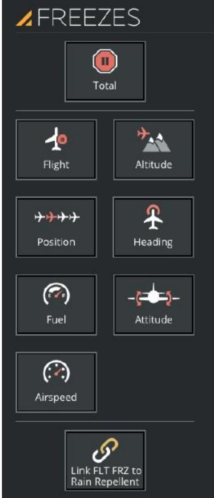
图 8：FREEZES 滑动面板
2.4 Sim Controls（模拟控制）
模拟控制按钮允许教员控制和监控各种模拟器系统状态，包括视觉、运动、操纵载荷、烟雾预注和天花板灯。
2.4.1 模拟控制卷展菜单按钮
| 按钮 | 功能说明 | 状态指示灯 |
|---|---|---|
| Visual 视觉 | 激活/停用视觉系统 | 两种状态：视觉系统开启 / 关闭 |
| Motion 运动 | 启动/停用运动系统 | Failed(红)/Not ready(白)/Ready(蓝)/On(绿)/Starting(闪烁绿)/Stopping(闪烁蓝)；运动系统未运行时按钮禁用 |
| Control Loading 操纵载荷 | 启动/停用操纵载荷系统 | 同 Motion 状态指示灯 |
| Prime Smoke 烟雾预注 | 启动/停用烟雾发生器系统；预注时指示灯闪烁绿色，就绪后常亮 | 两种状态：烟雾发生器系统开启 / 关闭 |
| Ceiling Lights 天花板灯 | 点亮/熄灭驾驶舱天花板灯 | 两种状态：天花板灯开启 / 关闭 |
| More… 更多 | 显示 SIMULATOR CONTROLS 滑动面板 | — |
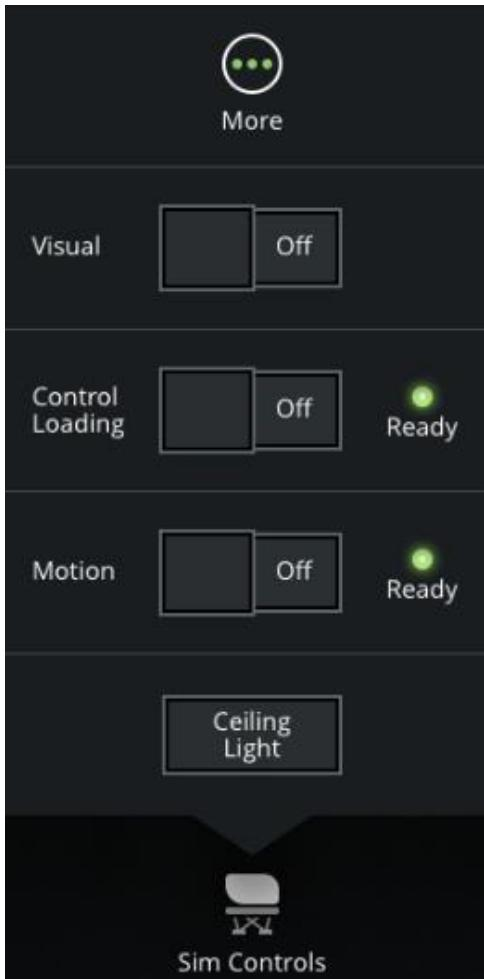
图 9：模拟控制卷展菜单（Sim Controls Roll up Menu）
2.4.2 SIMULATOR CONTROLS 滑动面板
包含两个选项卡：运动与操纵载荷（MOTION & CONTROL LOADING）、消息日志（MESSAGE LOG）。
| 选项卡/按钮 | 功能说明 |
|---|---|
| MOTION & CONTROL LOADING | 显示运动和操纵载荷系统状态指示灯（同 2.4.1），以及故障重置和互锁重置按钮 |
| Failure Reset 故障重置 | 尝试重置所有运动和操纵载荷系统的警告和故障信息；点击后按钮亮起 2 秒 |
| Interlock Reset 互锁重置 | 尝试重置所有运动和操纵载荷系统的互锁信息；互锁信息代表防止运动系统激活的安全装置状态；点击后按钮保持激活 2 秒 |
| MESSAGE LOG | 显示有限的运动与操纵载荷错误、警告及互锁信息 |
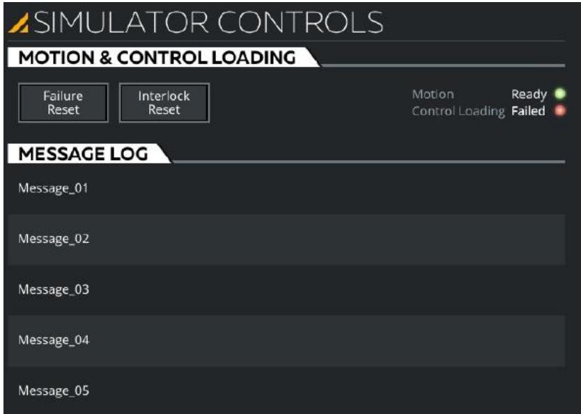
图 10：SIMULATOR CONTROLS 滑动面板
2.5 Volume（音量）
音量按钮允许教员控制模拟声音的音量。调节方式：输入文本字段或滑块控件。静音按钮可静音模拟声音。
| 属性 | 说明 |
|---|---|
| 功能定义 | 控制模拟声音的音量 |
| 交互方式 | 点击输入文本字段显示键盘手动输入，或使用滑块控件调节至最小值 |
| 边界行为 | 音量调节即时生效；静音按钮可一键静音 |
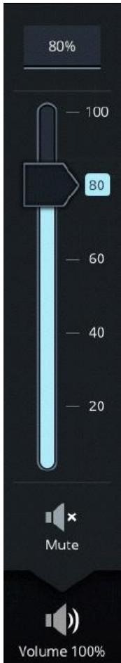
图 11：音量卷展菜单（Volume Roll up Menu）
2.6 Reposition（重新定位）
允许教员将飞机重新定位到相对于参考跑道的预设位置。操作步骤：1) 点击按钮显示重新定位卷展菜单；2) 点击所需预设位置；3) 点击重新定位按钮激活。所有预设位置在 1.2.5 参考机场选项卡 的 2.2.2 AIRPORT REPOSITION 选项卡中定义。点击"更多…"显示机场重新定位滑动面板。
| 属性 | 说明 |
|---|---|
| 功能定义 | 将飞机重新定位到预设位置 |
| 禁用条件 | 捕获、召回、重新定位或位移操作处于活动状态，或飞机在地面移动且速度超过 VR 速度时禁用 |
📎 引用章节 1.2.5 — 2.2.2 AIRPORT REPOSITION 选项卡：预设位置一览
以下预设位置均在 1.2.5 参考机场选项卡 — 2.2.2 机场重新定位选项卡（AIRPORT REPOSITION Tab） 的"重新定位预设部分"中定义，教员可一键将飞机定位至参考跑道的相对位置。重新定位结束时将设置飞行冻结，并停用加速功能。
| 预设名称 | 位置描述 | 典型飞机配置摘要 |
|---|---|---|
| 等待（HOLD） | 跑道等待位置 | 起落架放下，襟翼5（若当前位置对起飞无效），舱门关闭 |
| 滑行（TAXI） | 跑道滑行位置 | 起落架放下，襟翼5（若当前位置对起飞无效），舱门关闭 |
| 登机口/停机位 | 机场登机口或停机位 | 起落架放下，襟翼收上，减速板收起，1L舱门、右前和右后货舱门打开 |
| 中等空域作业 | 距参考跑道30海里，10,000英尺或FL100 | 起落架收上，襟翼收上，250 KCAS，航向道居中，平飞 |
| 高空作业 | 距参考跑道100海里，FL350 | 起落架收起，襟翼收起，马赫数0.78，航向道居中，平飞 |
| 左侧1海里、3海里 | 左侧顺风、正切3海里、距接地点前1海里 | 起落架收起，襟翼1，200 KCAS，1500英尺AGL，平飞 |
| 右侧1海里、3海里 | 右侧顺风、正切3海里、距接地点前1海里 | 同上，航向道偏差右侧3海里 |
| 起飞 | 参考跑道起飞位置 | 起落架放下，襟翼1+F，静止，地面 |
| 3海里短五边 | 参考跑道3海里五边位置 | 起落架放下，全襟翼，Vref+5，航向道/下滑道居中，下降 |
| 6海里 | 参考跑道6海里五边位置 | 起落架放下，襟翼3，F速度，航向道/下滑道居中，下降 |
| 8海里 | 参考跑道8海里位置 | 起落架收起，襟翼2，F速度，2000英尺AGL，航向道居中，平飞 |
| 12海里，左1海里 | 参考跑道12海里、左侧1海里 | 起落架收起，襟翼1，200 KCAS，3000英尺AGL，左1海里，30度切入角，平飞 |
| 12海里 | 参考跑道12海里正中 | 同上，航向道居中 |
| 12海里，右1海里 | 参考跑道12海里、右侧1海里 | 同上，右1海里，30度切入角，平飞 |
注：预设值可能因机型不同而有所变化；AGL 为相对于参考跑道入口高度。
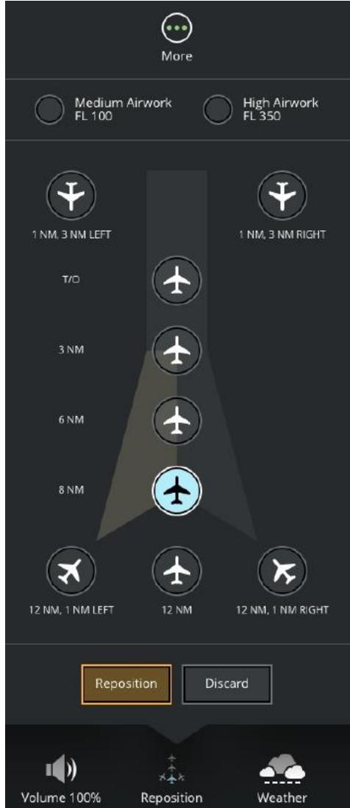
图 12：重新定位卷展菜单（Reposition Roll up Menu）
2.7 Weather Presets（天气预设）
允许教员根据 EASA/FAA 标准更改参考机场的云层和能见度条件。操作步骤：1) 点击按钮显示天气预设卷展菜单；2) 点击所需预设按钮。所有天气预设在 1.2.3 当前条件选项卡 的 CLOUDS 滑动面板 — 2.12.4 天气预设区中定义。卷展菜单名称随当前预设选择而变化。点击"更多…"显示高级天气区域页面。
📎 引用章节 1.2.3 — 2.12.4 CLOUDS 天气预设区：标准预设一览
以下天气预设按钮均在 1.2.3 当前条件选项卡 — 2.12.4 天气预设区（Weather Presets Section） 中定义，教员可一键根据 FAA、EASA、TCA 或 EUR 标准更改云层和能见度条件。
| 预设按钮 | 适用标准 | 条件说明 |
|---|---|---|
| CAVOK | FAA / EASA / TCA / EUR | 无云底低于5000英尺；无积雨云；能见度≥6法定英里/10公里；无降水、雷暴、浅雾或低吹雪 |
| 1000/5km | — | 1000英尺云高/5公里能见度条件下的盘旋 |
| 800/2km | — | 800英尺云高/2公里能见度条件下的盘旋 |
| CAT I | — | CAT I 仪表进近条件 |
| CAT II | — | CAT II 仪表进近条件 |
| CAT IIIA | — | CAT IIIA 仪表进近条件 |
| CAT IIIB | — | CAT IIIB 仪表进近条件 |
| CAT IIIC | — | CAT IIIC 仪表进近条件 |
| 0/0 | — | 零能见度/零云高条件 |
| 最小起飞RVR | — | 最小起飞跑道视程条件 |
注：点击对应预设按钮后，视觉显示将立即激活相应天气条件。上述标准按适用机型配置可能有所差异。
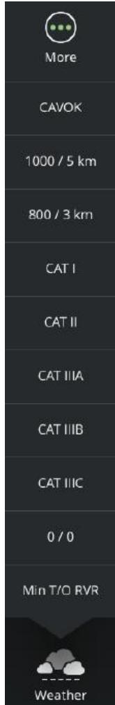
图 13：天气预设卷展菜单（WX Presets Roll up Menu）
2.8 Capture Flight（捕获飞行）
允许教员将飞行状态捕获到指定的捕获槽中。
| 属性 | 说明 |
|---|---|
| 功能定义 | 将当前飞行状态捕获到指定槽位 |
| 禁用条件 | 捕获、召回、重新定位或位移操作处于活动状态，或飞机在地面移动且速度超过 VR 速度时禁用 |
2.9 Print（打印）
允许教员打印当前屏幕显示的页面或查看打印选项。点击"更多…"显示 PRINT OPTIONS 滑动面板。
| 属性 | 说明 |
|---|---|
| 功能定义 | 打印当前屏幕页面或查看打印选项 |
| 打印选项 | PRINT OPTIONS 滑动面板包含复选框选择要打印的屏幕，然后点击打印按钮打印 |
| 反转模式 | 选中为黑白打印模式，未选中为彩色打印模式 |
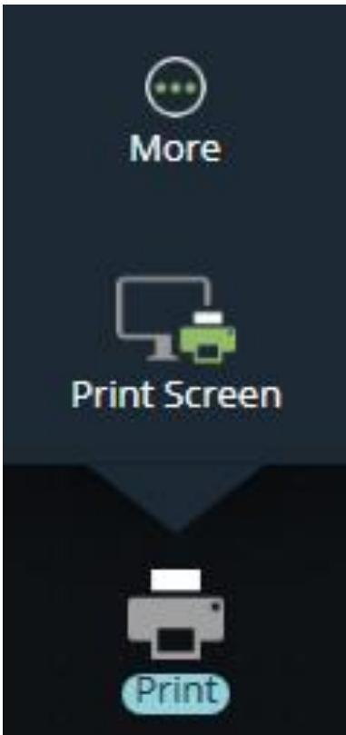
图 14：打印卷展菜单
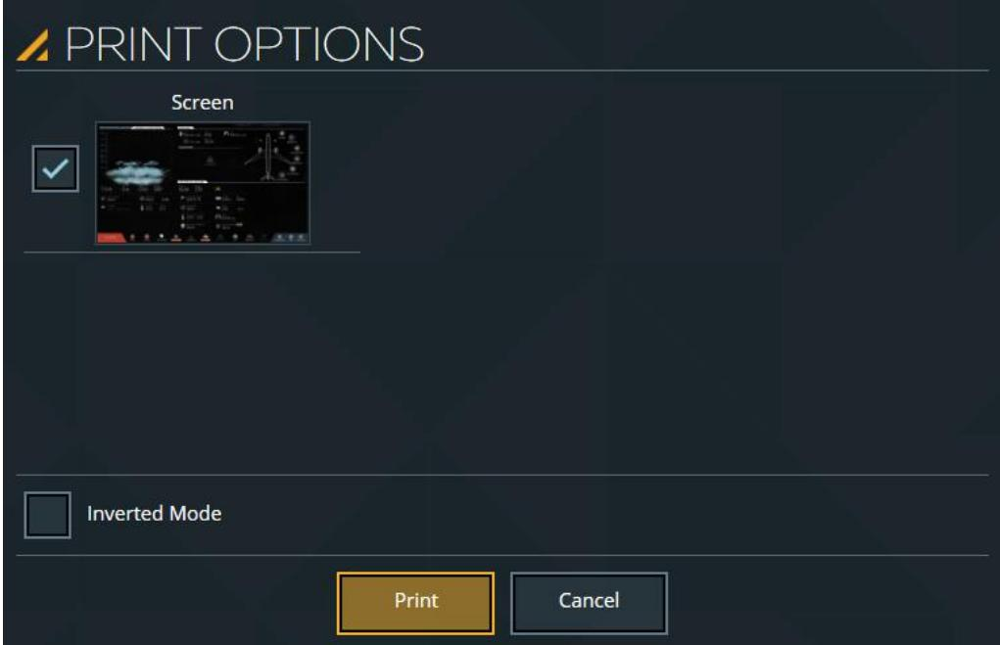
图 15：打印选项滑动面板
2.10 Speed Up（加速）
允许教员加速或减慢模拟时间。点击按钮显示加速菜单，然后点击所需加速倍率。
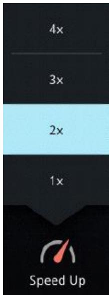
图 16：加速卷展菜单（Speed Up Roll Up Menu）
2.11 Clear All Malf.（清除所有故障）
允许教员清除所有已激活或待处理的故障。按钮上红色标记指示已激活和待处理的故障数量。
| 属性 | 说明 |
|---|---|
| 功能定义 | 一键清除所有激活或预位的故障 |
| 交互方式 | 点击按钮 → 显示确认弹窗 → 点击"确认"清除或"取消"保留 |
| 禁用条件 | 无激活或预位故障时禁用 |
| 边界行为 | 点击后按钮保持激活状态 2 秒 |
2.12 Notifications（通知）
允许教员查看模拟过程中发生的事件通知。每条通知消息带有颜色编码的图标，取决于消息的严重程度。新事件发生时通知显示 5 秒，后续通知堆叠显示。不再相关的通知自动移除。按钮上的红色徽章显示活动消息数量。
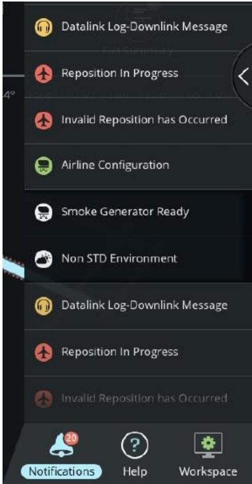
图 17：通知（Notifications）
2.13 Help Rollup Menu（帮助卷展菜单）
允许教员显示或隐藏与当前活动滑动面板关联的帮助，或创建可发送给 CAE 人员的帮助压缩文件。

图 18：帮助卷展菜单（Help Rollup Menu）
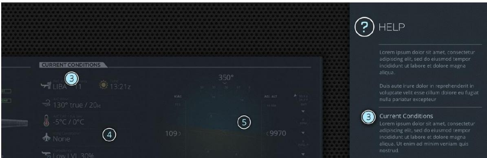
图 19：帮助面板（HELP Panel）
2.13.1 Help（帮助）
点击帮助按钮显示当前活动面板的帮助。可用帮助以带有数字的气泡形式显示在工作区上。点击气泡可查看对应帮助。如果在帮助模式激活后 2-3 秒内未进行选择，将弹出描述当前面板功能的弹窗。
2.13.2 Send Feedback（发送反馈）
允许教员在操作服务器上创建帮助压缩文件，然后发送给 CAE 人员。点击后：创建包含 IOS 屏幕截图和日志文件的帮助压缩文件；显示"Send Us Feedback"弹窗；提供基本图像编辑工具（铅笔、橡皮擦、颜色选择），允许教员对每张图像进行标注。点击发送按钮启动创建过程。
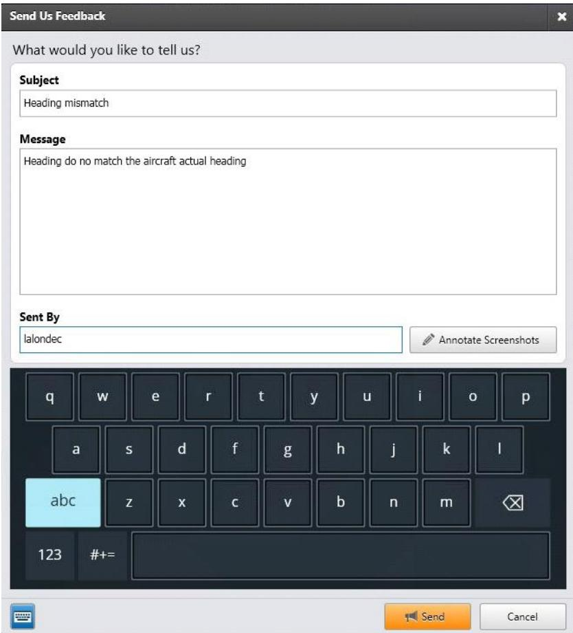
图 20：发送反馈弹窗
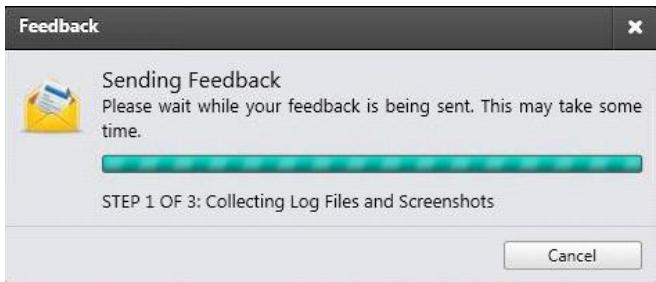
图 21：发送反馈中
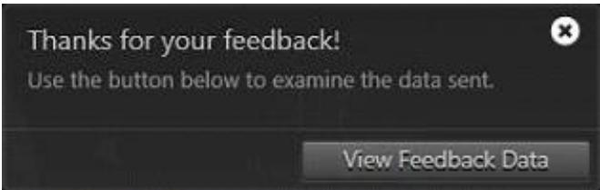
图 22：查看反馈数据文件
2.13.3 Help Zip File（帮助压缩文件）
帮助压缩文件内容包括 IOS 屏幕截图、日志文件和配置布局文件。
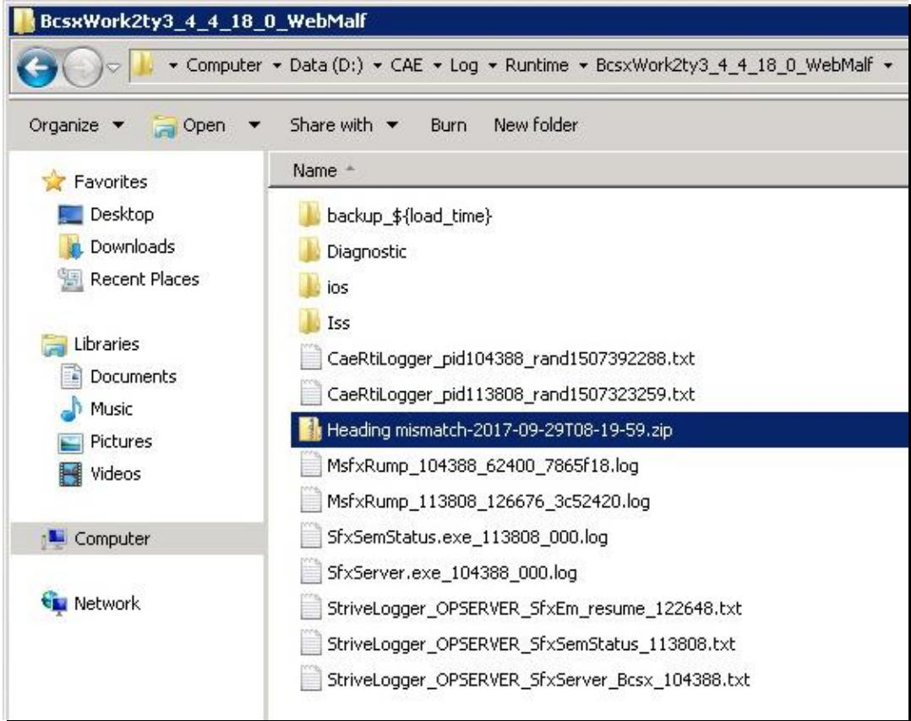
图 23：帮助压缩文件
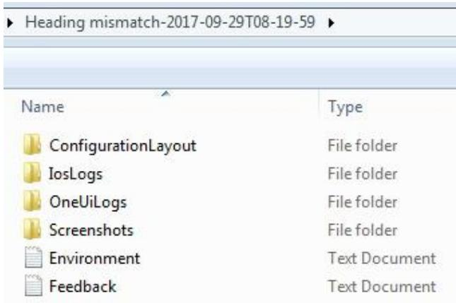
图 24：帮助压缩文件内容示例
2.14 Workspace（工作区）
允许教员选择在当前显示器上显示的应用程序工作区。主要工作区包括：控制面板、地图、课程计划。附加按钮：维护（切换至维护模式）、关闭工作区管理器。
| 按钮 | 功能说明 |
|---|---|
| Maintenance 维护 | 在当前显示器上显示维护页面 |
| Instr. Repeaters 仪表复示器 | 显示仪表复示器工作区 |
| Lesson Profile 课程计划剖面 | 显示课程计划配置文件工作区 |
| Map 地图 | 显示地图工作区 |
| Control Board 控制面板 | 显示控制面板工作区 |
| Advanced 高级 | 在当前显示器左侧显示高级工具栏，可快速访问飞机、位置、环境参数以及入侵者和通信页面 |
扩展阅读：高级工具栏的 9 大功能模块（飞机、位置、环境、入侵者、通信、故障、UPRT、重置/冻结、录制）及其详细操作说明，请参阅 1.7 高级（Advanced）。

图 25：工作区卷展菜单（Workspace Roll Up Menu）
三、全局操作流程与推导
3.1 Control Board Footer 教员核心操作流程全景图
3.2 操作通用状态机
状态说明
| 状态 | 说明 | 触发条件 |
|---|---|---|
| 空闲状态 | 教员在控制面板操作，底部栏无活动菜单 | 初始状态 / 菜单关闭后 |
| 卷展菜单打开中 | 底部按钮的卷展菜单已展开 | 点击底部栏任一按钮 |
| 滑动面板打开中 | 复杂功能的滑动面板已展开 | 点击"更多…"按钮 |
| 操作执行中 | 教员已选择具体操作，系统正在处理 | 点击卷展菜单或滑动面板中的选项 |
| 生效完成 | 操作已成功生效 | 操作处理完成后 |
3.3 关联依赖与异常边界
3.3.1 关联依赖表格
| 功能 | 依赖对象 | 依赖说明 |
|---|---|---|
| 重新定位 | 参考机场选项卡（1.2.5）AIRPORT REPOSITION | 预设位置在 1.2.5 — 2.2.2 AIRPORT REPOSITION 选项卡中定义（含等待/滑行、登机口、各距离五边/起始进近等14个预设） |
| 天气预设 | CLOUDS 滑动面板（1.2.3 — 2.12.4） | 天气预设在 1.2.3 — 2.12.4 天气预设区中定义（含 CAVOK、1000/5km、800/2km、CAT I~IIIC、0/0、最小起飞RVR 共10项） |
| Flight Freeze | Freezes 滑动面板（1.2.7 — 2.1） | 与 2.1 Flight Freeze 为同一功能 |
| 重置 - Systems | IOS 配置 | 可重置系统的数量和类型取决于 IOS 配置 |
| Workspace - Advanced | 控制面板各选项卡 | 高级工具栏提供对控制面板参数的快速访问 |
3.3.2 异常边界表格
| 异常场景 | 现象 | 处理方式 |
|---|---|---|
| 重新定位期间按钮禁用 | Flight Freeze / Freezes 等按钮显示禁用状态 | 等待重新定位或飞行配平完成 |
| 冻结激活时修改环境参数 | 温度/压力/风/云高等修改不生效 | 修改将在冻结解除后生效 |
| 运动系统未运行 | Motion 按钮禁用 | 检查运动系统状态指示灯，必要时联系维护人员 |
| 重置按钮亮起 2 秒后恢复 | 操作已完成，按钮恢复常态 | 正常行为，无需处理 |
四、测试要点
| 测试场景 | 测试步骤 | 期望结果 |
|---|---|---|
| 正向路径：飞行冻结 | 1. 点击 Flight Freeze 激活冻结 2. 观察飞行参数是否冻结 3. 再次点击解除冻结 | 参数冻结/解冻正常，解冻时无剧烈控制或运动变化 |
| 正向路径：环境重置 | 1. 点击 Resets → Environment 2. 观察环境参数是否恢复默认 | 跑道、能见度、RVR、云、雾等恢复默认值；按钮亮起 2 秒后禁用 |
| 正向路径：全部重置 | 1. 点击 Resets → Total 2. 观察是否执行系统重置 | 坠机重置、清除故障、清除失效站位等生效；按钮亮起 2 秒 |
| 正向路径：模拟控制 | 1. 点击 Sim Controls → Visual 切换开关 2. 观察视觉系统状态变化 | 视觉系统正确开启/关闭 |
| 边界条件：重新定位期间禁用 | 1. 执行重新定位 2. 尝试点击 Flight Freeze / Freezes 按钮 | 按钮显示禁用状态，重新定位完成后恢复可用 |
| 边界条件：冻结时参数修改 | 1. 激活飞行冻结 2. 修改温度/风等参数 3. 解除冻结 | 参数修改在冻结解除后才生效 |
| 联动测试：清除所有故障 | 1. 插入一个故障 2. 点击 Clear All Malf. 3. 确认清除 | 故障被清除，按钮红色标记消失 |
| 联动测试：工作区切换 | 1. 点击 Workspace → Map 2. 确认地图工作区显示 | 当前显示器切换至地图工作区 |
五、变更记录
| 日期 | 版本 | 变更内容 |
|---|---|---|
| 2026-06-04 | V1.0 | 初始生成 ch1_2_7 控制面板底部 HTML，含 14 个核心功能详解、25 张配图、全局操作流程、状态机及测试要点 |
| 2026-06-04 | V1.1 | 补充外部引用章节内容：在 2.6 Reposition 处嵌入 9.2.2 AIRPORT REPOSITION 预设位置一览（14个预设），在 2.7 Weather Presets 处嵌入 7.2.4 天气预设区（10项标准），在 3.3.1 关联依赖表格中补全 11.3.4.3 飞行冻结说明 |
| 2026-06-04 | V1.2 | 将原始文档章节号全面映射为自生HTML章节：9.2.2 → 1.2.5—2.2.2、7.2.4 → 1.2.3—2.12.4、11.3.4.3 → 1.2.7—2.1；正文与折叠面板中增加相对超链接，原始章节号以括号备注保留 |